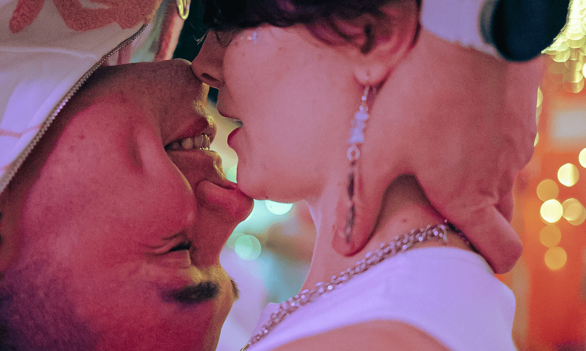
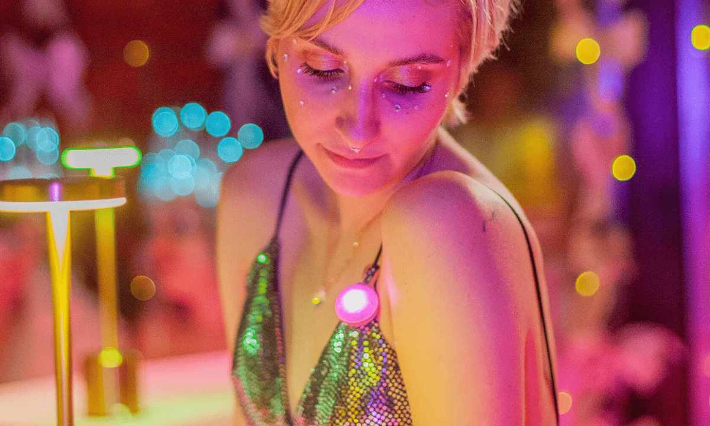

О проекте
Визитка
Кому мы
помогаем
Цели/задачи/
миссия
Ценности
Правила
Как помочь?
Юридическая
информация
Мероприятия
Поцелуйный бар
Кисскотека
Правила
FAQ
Тренинги
Лекции
Мастер-
классы
Социальные
игры
Календарь
мероприятий
Счастливые
истории
Большие интервью
Отзывы участников
Участникам
Куда пойти?
Программа
лояльности
Вопросы
и ответы
Большие
интервью
Отзывы
участников
База знаний
Исследования
Альманах
Полезные статьи
Блог
FAQ
Контакты
Галерея
2025
2024
2023
2022
2021

Поцелуйный Бар
12 февраля
Поцелуйный Бар
12 февраля
Кисскотека
3 марта
Кисскотека
17 марта
Кисскотека
10 мая

Кисскотека
19 июня
Кисскотека
10 мая
Кисскотека
19 июня
Кисскотека
17 марта
Кисскотека
10 мая